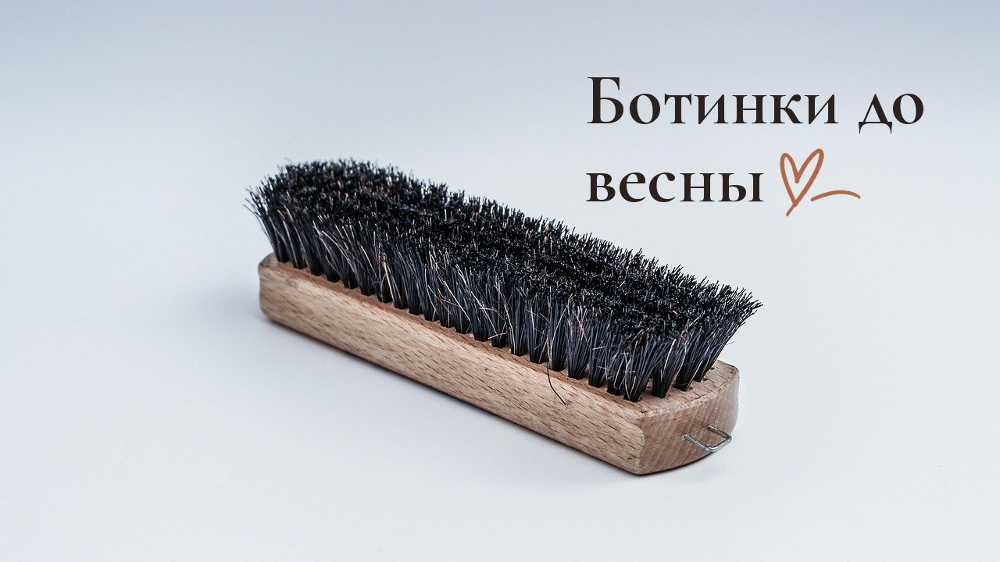
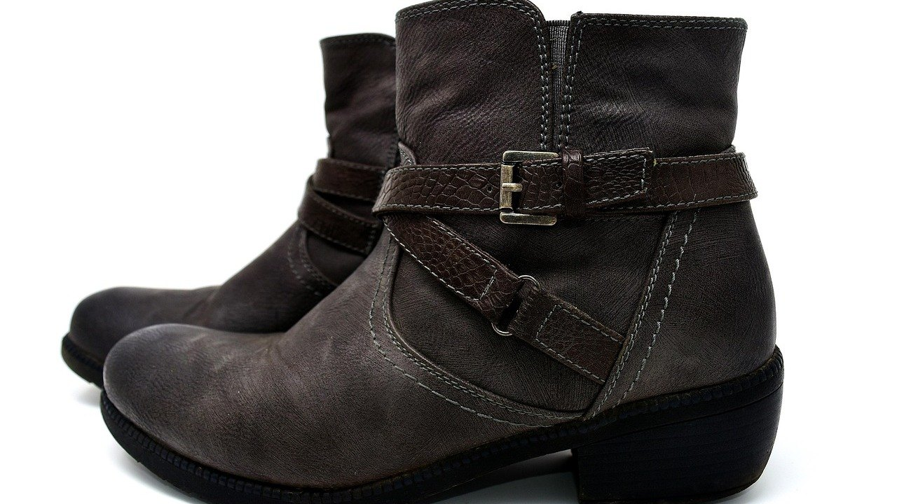

Как убрать соль с обуви из кожи и замши: 5 ошибок, которые портят пару

Белые разводы на ботинках появляются после первой же прогулки по реагентам. И чаще всего пару портит не сама соль, а то, что мы делаем с ней вечером в прихожей.
Соль из реагентов вытягивает из кожи влагу и жир. Если её оставить, кожа становится жёсткой, а на сгибах появляются трещины, которые уже не закрасить кремом. Замша от соли грубеет и покрывается пятнами.
У нас двое детей, и зимой после каждой прогулки в прихожей выстраивается ряд мокрых ботинок с белыми полосами. Поэтому я хорошо знаю, как быстро соль съедает обувь, если ей не мешать. Вот пять ошибок, которые ей помогают.
Ошибка №1: начинать уход, когда разводы уже появились
Самый неочевидный совет: обувь от соли защищают заранее, а не после прогулки. Кожа без защиты впитывает солёную воду, как губка, и белые следы проступают изнутри.
Что делать: до первого снега обработать пару водоотталкивающей пропиткой в два-три слоя, давая каждому слою высохнуть. Потом обновлять пропитку раз в неделю, а в слякоть чаще. Для замши и нубука нужна своя пропитка, а не общая для гладкой кожи, иначе ворс слипнется.
Ошибка №2: оставлять соль до утра
Вечером сил нет, и мокрые ботинки остаются в прихожей как есть. За ночь вода испаряется, а соль остаётся в коже и въедается глубже, потому что больше ничто её не растворяет.
Что делать: сразу после прогулки протереть обувь мягкой влажной тканью, чтобы смыть соль, пока она не высохла. Это занимает пару минут, но экономит часы чистки потом.

Ошибка №3: сушить обувь на батарее
Хочется высушить ботинки к утру, и их ставят прямо на батарею или рядом с обогревателем. Кожа от резкого жара садится, трескается и теряет форму, а соль в ней только сильнее застывает.
Что делать: набить обувь мятой бумагой и оставить сохнуть при комнатной температуре, подальше от батареи. Бумагу поменять через пару часов, когда она наберёт влагу. Для детской обуви, которая нужна утром, удобна электросушилка с мягким теплом.
Ошибка №4: тереть замшу мокрой тряпкой
С гладкой кожей вода помогает, а с замшей наоборот. Если тереть её мокрой тряпкой, ворс сваливается, на месте развода появляется тёмное пятно, а соль просто размазывается по всей поверхности.
Что делать: сначала полностью высушить замшу, потом пройтись по разводам специальной щёткой или ластиком для замши. Если след остался, подержать пару над паром несколько секунд и снова расчесать ворс щёткой.
Ошибка №5: забывать про крем после чистки
Обувь отмыта, высохла, и кажется, что дело сделано. Но соль уже вытянула из кожи жир, и без него кожа быстро становится сухой и ломкой, особенно на сгибе у носка.
Что делать: на чистую сухую гладкую кожу нанести крем в цвет обуви, дать впитаться минут пятнадцать и отполировать мягкой тканью. Для упрямых белых следов на гладкой коже помогает раствор столового уксуса с водой в пропорции один к двум: он растворяет соль, а потом кожу нужно протереть чистой водой и обязательно покрыть кремом.
От автора
Мне кажется, зимняя обувь стареет не от времени, а от мелочей, на которые вечером не хватает сил. Пара минут у двери с влажной тряпкой выглядит скучно, но именно она решает, доживут ли ботинки до весны.
Я давно перестала ждать от себя идеального ухода каждый день. Мне хватает простого правила: не оставлять соль на ночь. Всё остальное можно сделать в выходные, когда спокойнее.
Подписывайтесь: впереди разборы о том, как сохранить зимние вещи и обувь до весны без лишних трат.
А вы ухаживаете за обувью сразу после прогулки или откладываете на выходные?